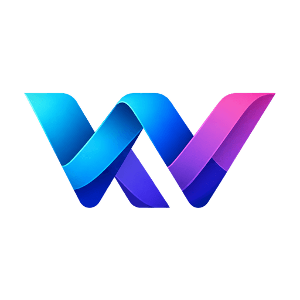

Fleet already runs on this computer
Fleet runs in the background. The desktop app will use it: the same sessions, harnesses and machines, and it keeps running when you close the window.

Fleet runs in the background. The desktop app will use it: the same sessions, harnesses and machines, and it keeps running when you close the window.